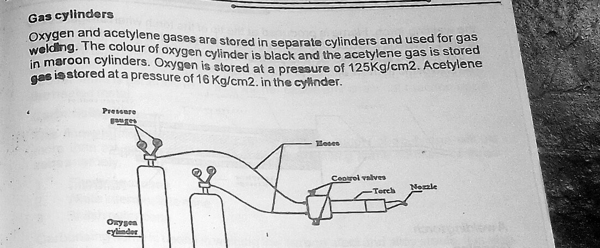
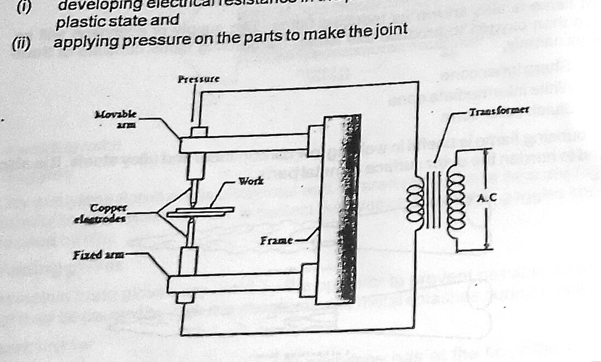
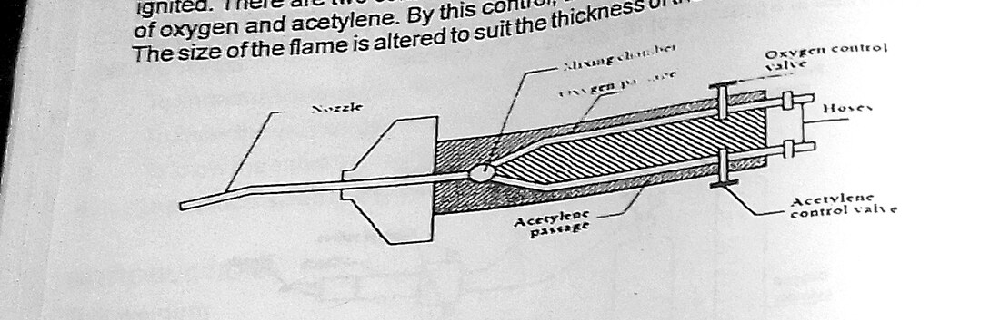
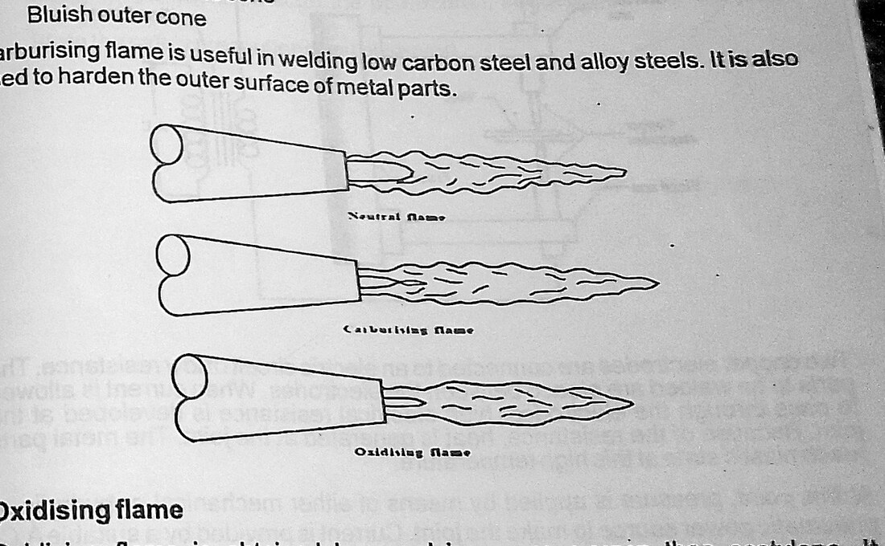

Section: Heat Shop / Welding · Code HS 301
Gas Welding: Joining Two Parts by the Oxy-Acetylene Process
Two steel plates, a flame at 3200 °C and a filler rod. Everything that distinguishes a sound weld from a cold-lapped one comes down to controlling a single thing — the size and stability of the molten pool — and that in turn comes down to the mixture ratio set at the torch and the angle at which it is held. This report covers the process, the equipment, the three flames and the production of a butt weld in mild steel.
1 Aims
The aim of this practical is to join two metal parts permanently by gas welding, and in doing so to understand the oxy-acetylene process: the equipment that stores, regulates and mixes the two gases; the chemistry of the flame and the three distinct flames it can be set to; the choice of filler rod and flux; and the technique by which a molten pool is established and carried along a joint.
A second and equally important aim is to acquire the safety discipline of the heat shop. Gas welding puts a student in the same working area as a cylinder at 125 kg/cm², a flammable gas that is unstable above about 1 kg/cm² free pressure, and a flame hotter than the melting point of every metal in the shop. There is no other section of the laboratory where the consequences of carelessness are as immediate.
2 Objectives
- To know the materials and consumables used in the welding shop.
- To familiarise with the equipment used in gas welding and the function of each item.
- To identify and set the three oxy-acetylene flames — neutral, oxidising and carburising — and to state the application of each.
- To distinguish welding from the allied processes of brazing and soldering.
- To prepare an edge for welding appropriate to the plate thickness.
- To join two parts by gas welding and to examine the resulting joint.
3 Apparatus
Materials: mild steel plate or strip specimens, mild steel filler rod, and flux appropriate to the parent metal.
- Oxygen cylinderBlack; right-hand threaded outlet; charged to about 125 kg/cm².
- Acetylene cylinderMaroon; left-hand threaded outlet (nut notched); charged to about 16 kg/cm², the gas dissolved in acetone in a porous mass.
- Pressure regulators (two)Reduce cylinder pressure to working pressure; each carries a high-pressure and a low-pressure gauge.
- HosesBlue or green for oxygen, red for acetylene; different fittings prevent cross-connection.
- Non-return valves / flashback arrestorsPrevent reverse gas flow and stop a flashback reaching the cylinder.
- Welding torch (blowpipe)Mixes the two gases in the required ratio and delivers them to the nozzle.
- Set of nozzles / tipsSized to plate thickness; determines the gas flow rate and hence the heat input.
- Spark lighter (friction igniter)The only permitted means of lighting the torch.
- Filler rodsSupply additional metal to the joint; composition matched to the parent metal.
- FluxDissolves and floats off oxides; not required for plain mild steel but essential for cast iron, aluminium, copper and brass.
- Welding goggles (shade 4–6)Filter the intense visible and infrared radiation of the flame.
- Leather apron, gauntlets, spats, closed bootsProtection from spatter and radiant heat.
- Chipping hammer and wire brushCleaning the joint before welding and the bead afterwards.
- Tongs, clamps, firebricksHandling and positioning hot work.
- Cylinder key and trolleyOperating the cylinder valve; securing cylinders upright.
- Fire extinguisher and bucket of water / sandImmediate fire response.

4 Theory and Diagrams
4.1 Welding and the allied processes
Welding is the process of joining two pieces of metal by raising the parent metal at the joint to its melting point so that the two run together and, on solidifying, form a single continuous piece. Filler metal of similar composition may be added to fill the joint, but the essential feature is that the parent metal itself melts. The joint is therefore permanent, and, if properly made, as strong as the parent material.
This distinguishes welding sharply from the two allied processes with which it is often confused:
| Feature | Welding | Brazing | Soldering |
|---|---|---|---|
| Parent metal melted? | Yes | No | No |
| Filler | Same as parent metal (or none) | Brass / bronze alloy | Tin-lead or tin-silver alloy |
| Approximate filler melting point | Above 1500 °C for steel | Above 450 °C | Below 450 °C (typically 180–250 °C) |
| Mechanism of adhesion | Fusion | Capillary action and adhesion | Capillary action and adhesion |
| Joint strength | Comparable with parent metal | Lower than parent metal | Low; for sealing and electrical continuity |
| Distortion | Considerable | Moderate | Slight |
| Dissimilar metals | Difficult | Readily joined | Readily joined |
Classification of welding processes
Welding processes divide broadly into two families:
- Plastic (pressure) welding — the parts are heated to a plastic state and then forced together under pressure; the metal does not run. Forge welding and the resistance welding processes (spot, seam, projection, butt and flash welding) belong here.
- Fusion (non-pressure) welding — the parts are melted at the joint and allowed to flow together, with no pressure applied. Gas welding, arc welding (manual metal arc, MIG, TIG, submerged arc) and thermit welding belong here.
Resistance welding, illustrated in the manual, is worth noting for contrast. Two electrodes clamp the work and a very heavy current at low voltage is passed through it; the resistance of the joint interface generates heat locally according to H = I²Rt, and the parts are forged together under the electrode pressure. It is the dominant joining process in sheet metal mass production — a car body contains thousands of spot welds — because it is fast, requires no filler or flux, and is readily automated.

4.2 The oxy-acetylene process
Gas welding uses the heat of a gas flame to melt the parent metal. Several fuel gases can be burned in oxygen — hydrogen, propane, butane, coal gas — but acetylene (C2H2) is the one used for welding, and the reason is its flame temperature. Burning acetylene in oxygen gives roughly 3200 °C, several hundred degrees hotter than any of the alternatives, and comfortably above the 1500 °C or so needed to melt steel. That margin is what allows the pool to be established quickly enough that the surrounding metal does not have time to conduct the heat away.
Combustion occurs in two stages, and this two-stage character is the key to everything about the flame:
This first reaction takes place in the small bright inner cone at the tip of the nozzle, using oxygen supplied through the torch, and it releases about one third of the total heat. The products, carbon monoxide and hydrogen, are themselves fuels, and they burn in a second stage using oxygen drawn from the surrounding atmosphere:
This second reaction takes place in the large, faint blue outer envelope, which is cooler and more diffuse. Two consequences follow. First, the hottest point of the flame is just beyond the tip of the inner cone — about 2 to 3 mm from it — and that is where the cone must be held relative to the work. Second, the outer envelope, being rich in CO and H2 and consuming atmospheric oxygen, forms a protective shroud around the pool which keeps air away from the molten metal. Gas welding has no separate shielding gas; the flame shields itself.

4.3 The three flames
By varying the ratio of oxygen to acetylene at the torch valves, three distinct flames can be produced. They look different, they behave differently, and using the wrong one is one of the commonest causes of a defective weld.
(i) The neutral flame
Produced at an oxygen-to-acetylene ratio of approximately 1 : 1. All the acetylene is burned by the supplied oxygen in the first stage, and the flame neither adds carbon to nor removes it from the weld pool. It is recognised by a sharply defined, rounded inner cone with no feather, and it is the hottest of the three at about 3200 °C. The neutral flame is the general-purpose welding flame and is used for mild steel, stainless steel, cast iron, copper and aluminium — and it is the flame used in this exercise.
(ii) The oxidising flame
Produced with an excess of oxygen, a ratio of about 1.2–1.5 : 1. The inner cone is shorter, sharper and more pointed, the flame burns with a harsh hissing sound, and it is slightly hotter than neutral in the immediate cone but its excess oxygen attacks the weld pool. On steel it produces oxides, porosity and a brittle, weak weld, and it must not be used. It has two legitimate applications: welding brass and bronze, where the excess oxygen forms a thin film of oxide over the pool that suppresses the vaporisation of zinc, and oxy-fuel cutting, which is not welding at all but the controlled oxidation of the steel by a jet of pure oxygen.
(iii) The carburising (reducing) flame
Produced with an excess of acetylene, a ratio of about 0.8–0.9 : 1. It is recognised by a third, intermediate zone — a white acetylene feather — that extends beyond the inner cone, and it is the coolest of the three at roughly 3000 °C. The excess carbon is absorbed by the pool, which on steel raises the carbon content locally and produces a hard, brittle weld. It is used deliberately for hard-facing, for welding high-carbon steel and Monel, and — importantly — a slightly carburising flame is used for aluminium, because its reducing character helps deal with the tenacious oxide film.

Do not try to set the ratio by eye from a cold start. Open the acetylene valve and light the torch; the flame will be smoky and yellow. Increase acetylene until the smoke just clears. Then open the oxygen valve slowly: the flame will draw in, the feather will appear, and the feather will then shrink steadily. The instant the feather disappears into the inner cone, the flame is neutral — stop there. A quarter turn more and it is oxidising. Setting it by watching the feather vanish is far more reliable than judging cone shape, because the transition is a sharp, visible event.
4.4 Gases, cylinders and pressures
Oxygen is stored as a compressed gas in a black cylinder at approximately 125 kg/cm². It is not itself flammable but it supports combustion violently; oxygen in contact with oil or grease under pressure will ignite spontaneously, which is why no oil or grease of any kind may go near oxygen equipment.
Acetylene is stored in a maroon cylinder at approximately 16 kg/cm², and it is not stored as a simple compressed gas. Free acetylene is chemically unstable and will decompose explosively if compressed much above about 1 kg/cm², without any oxygen being present at all. The cylinder is therefore packed with a porous mass saturated with acetone, in which the acetylene dissolves — acetone will absorb roughly 25 times its own volume of acetylene per atmosphere of pressure. Two operating rules follow directly from this construction: an acetylene cylinder must always be used and stored upright, or liquid acetone will be drawn into the hose, and it must not be drawn off too rapidly, or acetone will be carried over with the gas.
The regulators reduce cylinder pressure to working pressure and hold it constant as the cylinder empties. Typical working pressures for general mild steel welding are about 1.0 kg/cm² for oxygen and 0.15 kg/cm² for acetylene; the acetylene working pressure must in no circumstances be set above 1 kg/cm², for the reason just given.
A backfire is a momentary retreat of the flame into the tip with a sharp pop, usually caused by touching the tip on the work, by overheating, or by an obstruction in the nozzle. It is a warning. A flashback is the flame travelling back through the mixing chamber and into the hose, signalled by a shrill hissing or squealing and black smoke; it can reach the cylinder and cause an explosion. The response is immediate and in this order: close the acetylene valve first, then the oxygen valve, then allow the torch to cool before investigating. Flashback arrestors fitted at the regulator and at the torch are the engineered protection against this, and the reason they are mandatory.
4.5 Edge preparation, joints and technique
The oxy-acetylene process is used on sections from about 2 mm to 50 mm thick, and the preparation of the edges depends on that thickness:
- Below 3 mm — square edges, butted with a small root gap, often welded with no filler at all (a fusion or flange weld).
- 3 to 5 mm — square edges with a root gap of roughly half the plate thickness, welded from one side with filler.
- 5 to 15 mm — a single-V preparation, each edge bevelled to about 30°, giving an included angle of 60°, with a root face of 1–2 mm and a root gap of 1–3 mm.
- Above 15 mm — a double-V preparation welded from both sides, which halves the volume of filler required and, more importantly, balances the shrinkage about the neutral axis so that the plate does not bow.
The basic joint types are the butt, lap, tee, corner and edge joints. Two welding techniques are used:
- Leftward (forehand) welding — the torch moves from right to left with the flame pointing forward into the unwelded joint and the filler rod ahead of the flame. The flame preheats the metal in front of the pool. It is the standard technique for thin plate up to about 5 mm.
- Rightward (backhand) welding — the torch moves from left to right with the flame pointing back at the completed weld and the rod between the flame and the pool. It gives better penetration, uses less gas and less filler, and gives a slower cooling rate because the flame plays over the finished bead; it is used on plate above about 5 mm.
The torch is held at roughly 60–70° to the plate and the filler rod at about 30–40°, and the inner cone is kept 2–3 mm clear of the pool surface — never touching it, which causes a backfire and contaminates the tip.
The heat of welding expands the metal locally; on cooling, the weld metal contracts and pulls the plates together. Two plates butted with a parallel gap and welded from one end will close up ahead of the arc and the gap will have vanished by the time the weld is half done. The remedies are to tack the joint at intervals before welding, to set the plates with a slight taper in the gap (wider at the finish end), and to weld in a step-back or staggered sequence. This is the same shrinkage problem that makes the double-V preparation necessary on thick plate.
5 Table of Values
Tables 1 to 3 give the equipment and process data specified in the manual and standard practice for the process. These are settings and specifications; no measured experimental readings are reported, as the exercise is a fabrication exercise.
| Gas | Cylinder colour | Cylinder pressure | Working pressure | Storage form |
|---|---|---|---|---|
| Oxygen (O2) | Black | 125 kg/cm² | 1.0 kg/cm² | Compressed gas; right-hand thread |
| Acetylene (C2H2) | Maroon | 16 kg/cm² | 0.15 kg/cm² | Dissolved in acetone in a porous mass; left-hand thread |
| Flame | O2 : C2H2 | Approx. temperature | Appearance | Application |
|---|---|---|---|---|
| Neutral | 1 : 1 | 3200 °C | Clean, rounded inner cone; no feather | Mild steel, stainless steel, cast iron, copper, aluminium — general welding |
| Oxidising | 1.2–1.5 : 1 | > 3200 °C | Short, sharp, pointed cone; harsh hissing | Brass and bronze; oxy-fuel cutting. Not for steel. |
| Carburising | 0.8–0.9 : 1 | ≈ 3000 °C | White acetylene feather beyond the inner cone | Hard-facing, high-carbon steel, Monel, aluminium (slightly carburising) |
| Plate thickness | Preparation | Root gap | Technique | Filler |
|---|---|---|---|---|
| Below 2 mm | Flanged edge | Nil | Leftward | None |
| 2 – 3 mm | Square butt | 1 mm | Leftward | Optional |
| 3 – 5 mm | Square butt | ≈ t/2 | Leftward | Yes |
| 5 – 15 mm | Single V, 60° included | 1 – 3 mm | Rightward | Yes, multi-run |
| Above 15 mm | Double V, welded both sides | 1 – 3 mm | Rightward | Yes, multi-run |
| Process range | Oxy-acetylene welding is applied to sections from about 2 mm to 50 mm. | |||
6 Procedure
A. Setting up the equipment
- The cylinders were checked to be secured upright in the trolley and chained. The area was checked clear of oil, grease, rags, solvent and any combustible material, and the fire extinguisher was confirmed present.
- Each cylinder valve was cracked momentarily — opened briefly and closed — before the regulator was fitted, to blow out any dust from the outlet.
- The regulators were fitted, the oxygen regulator to its right-hand thread and the acetylene regulator to its left-hand thread. The adjusting screws were first backed fully off so that each regulator was closed.
- The hoses were connected — blue to oxygen, red to acetylene — through the non-return valves and flashback arrestors, and the torch was fitted with the nozzle appropriate to the plate thickness.
- The cylinder valves were opened slowly, the oxygen valve fully and the acetylene valve by about one turn so that it could be shut quickly in an emergency, and the cylinder contents were read on the high-pressure gauges.
- The regulator adjusting screws were turned in until the low-pressure gauges read the working pressures of about 1.0 kg/cm² oxygen and 0.15 kg/cm² acetylene.
- All joints were tested for leaks with soapy water. No flame was brought near the equipment until this had been done.
B. Preparing the work
- The two mild steel specimens were cut to size and their edges were prepared to suit the thickness — square butt for the thinner material, with the edges filed clean and square.
- The joint faces and the surrounding 25 mm of each plate were cleaned with a wire brush and file to bare bright metal, removing all rust, scale, paint, oil and moisture.
- The plates were set up on firebricks with the required root gap, aligned flat, and the gap was set slightly wider at the finishing end to allow for shrinkage.
- The joint was tack welded at each end and at intervals along its length, so that the plates could not close up or move during welding.
- The filler rod was selected to match the parent metal and its diameter chosen to suit the plate thickness.
C. Lighting and setting the flame
- Goggles, gauntlets, apron and boots were put on, and it was confirmed that no one in the vicinity was unprotected.
- The acetylene valve on the torch was opened about a quarter turn and the gas was ignited with the spark lighter — never with a match, lighter or hot metal.
- The acetylene was increased until the smoky yellow flame just ceased to produce black smoke and stood clear of the nozzle.
- The oxygen valve was then opened slowly. The flame drew in and the white acetylene feather appeared and shrank. At the moment the feather disappeared into the inner cone, adjustment was stopped: the flame was neutral.
D. Welding
- The torch was held at about 60–70° to the plate and the filler rod at about 30–40°, using the leftward (forehand) technique for the thin plate — torch travelling right to left with the flame directed forward into the unwelded joint.
- The inner cone was brought to within 2–3 mm of the starting point and held there, without touching, until a molten pool formed and bridged the root gap. Nothing was moved until the pool was clearly established, since a weld begun before the pool exists gives a cold start with no fusion.
- The torch was then advanced steadily along the joint with a small circular or crescent motion, keeping the pool the same size throughout, and the filler rod was dipped into the leading edge of the pool at regular intervals — into the pool, never melted by the flame and dripped in.
- Travel speed was controlled by watching the pool: if it grew and threatened to drop through, the torch was advanced faster or lifted very slightly; if it shrank, the torch was slowed.
- Where the run had to be interrupted, the restart was made about 10 mm back into the completed bead so that the two runs fused together.
- At the end of the run the torch was withdrawn gradually rather than snatched away, so that the crater was filled and did not crack.
E. Shutting down and examining the joint
- The torch was extinguished by closing the acetylene valve first and the oxygen valve second.
- The cylinder valves were closed, the torch valves were opened to bleed the residual gas from the hoses, and the regulator adjusting screws were backed off so that the regulators were left unloaded.
- The work was allowed to cool in still air — not quenched, which would harden and possibly crack the weld — and was handled with tongs until cool.
- The bead was cleaned with the wire brush and examined visually for uniformity of width and ripple, for penetration at the root, and for defects: undercut, overlap, porosity, cracks and lack of fusion.
7 Precautions
- Full personal protective equipment was worn: welding goggles of the correct shade, leather gauntlets, leather apron, and closed leather boots. Synthetic clothing was avoided, since it melts onto the skin.
- Cylinders were kept upright, secured against falling, and away from heat. An acetylene cylinder in particular must never be laid on its side, or acetone will be drawn into the hose.
- No oil or grease was allowed anywhere near the oxygen equipment, including on the hands and gloves. Oxygen under pressure ignites hydrocarbons spontaneously.
- Cylinder valves were cracked before the regulators were fitted, and regulator adjusting screws were fully released before the cylinder valves were opened.
- Cylinder valves were opened slowly. The acetylene valve was opened only about one turn so that it could be closed quickly in an emergency, and the cylinder key was left in place on the valve.
- The acetylene working pressure was never set above 1 kg/cm², because free acetylene decomposes explosively above that pressure without any oxygen present.
- All connections were leak-tested with soapy water before any flame was lit. A leak was never tested for with a flame.
- The torch was lit only with a friction spark lighter.
- The torch was shut down in the correct order — acetylene off first, then oxygen — both at the end of a run and in response to a backfire or flashback.
- The torch was never pointed at a person, a cylinder or a hose, and was never laid down while alight; it was hung on its hook.
- The nozzle was kept clear of the pool. Touching the work with the tip causes a backfire and contaminates the nozzle.
- Welding was carried out in a well-ventilated area away from combustible materials, with a fire extinguisher and water to hand, and the area was checked for smouldering material after work finished.
- Hot work was handled only with tongs, and hot specimens were placed on firebricks and marked as hot, never left where another student might pick them up.
- The finished weld was allowed to cool in air and was not quenched.
- Screens were used so that bystanders were not exposed to the glare, and no one was allowed to observe the flame without goggles.
8 Discussion
A butt joint was made between two mild steel specimens with a neutral flame, and the resulting bead was continuous and had penetrated the root. Getting there required several attempts, and the failures were instructive because each maps onto a specific physical cause.
The first attempt produced no fusion at all. We moved the torch along the joint too soon, before a molten pool had formed, and what resulted was a line of filler metal lying on top of two unmelted plates — it could be chipped off with a hammer. This is the classic cold lap, and it illustrates the fundamental point that distinguishes welding from brazing: in welding the parent metal must melt, and until you can actually see the surface of the plate go liquid and glossy, nothing useful is happening. The correct discipline is to hold the cone still at the start point and wait — possibly for several seconds on thicker material — until the pool forms, and only then begin travelling.
The second attempt burned through. Having learned to establish the pool, we then travelled too slowly, the pool grew, and on thin plate a pool that grows past a certain size loses its surface tension support and simply drops out, leaving a hole. The lesson here is that the travel speed is not a fixed quantity to be memorised but a continuous feedback control: watch the pool and keep it the same size. Every other variable — torch angle, cone distance, plate temperature as the run progresses — changes as you go, and the travel speed is what you adjust to compensate. The plate also gets hotter along the run, so a speed correct at the start is too slow by the end.
The third issue was distortion. Our first tacked-up pair were set with a parallel gap. By the time the weld was two thirds complete, the gap ahead of the pool had closed almost entirely and the two plates had lifted out of plane at the far end. This is pure thermal shrinkage: the weld metal and the heat-affected zone are deposited hot and expanded, and as they cool they contract and pull the plates toward each other and toward the welded face. Setting the gap with a slight taper, wider at the finish, and tacking at closer intervals made a visible difference on the next attempt. It is also the reason the double-V preparation exists for thick plate — welding alternately from both sides puts the shrinkage on both sides of the neutral axis and the plate stays flat.
The flame setting deserves a note. Judging a neutral flame from a static picture is much harder than doing it dynamically. The technique described in section 4.3 — watching the acetylene feather shrink and stopping at the instant it disappears — converts a continuous judgement into a discrete event, and once we started setting it that way the flame was consistent from run to run. One group welded a short section with a slightly oxidising flame and the difference was unmistakable even to a beginner: the pool was agitated and gave off sparks, and the resulting bead was pitted and dull grey rather than bright, as the excess oxygen burned the metal.
On safety, the thing that struck the group most was the acetylene cylinder. That a gas can detonate purely from being compressed, with no oxidiser present at all, is not intuitive, and it explains a series of shop rules that otherwise look arbitrary: why the cylinder is packed with acetone and a porous mass, why it must stand upright, why the working pressure ceiling of 1 kg/cm² is absolute rather than advisory, and why the acetylene valve is closed first in every shutdown — closing oxygen first would leave a fuel-rich flame burning back into the mixing chamber.
Comparing the process with the alternatives also clarified where gas welding sits. Its flame is not as concentrated as an arc, so the heat-affected zone is wide and distortion is greater; it is slow, and it is not economical on thick plate. What it offers in exchange is very fine control of heat input, the ability to weld thin sheet that an arc would blow straight through, no electricity supply required, and the same set of equipment will also cut, braze, solder and heat for bending. For a maintenance workshop or a site with no reliable power, that versatility is exactly why the oxy-acetylene set remains standard equipment.
9 Conclusion
The objectives of the practical were met. Two mild steel parts were successfully joined by oxy-acetylene gas welding, producing a continuous, fused butt joint with root penetration.
The equipment of the gas welding installation was identified and correctly set up: oxygen at a cylinder pressure of about 125 kg/cm² regulated to a working pressure of 1.0 kg/cm², and acetylene at about 16 kg/cm² regulated to 0.15 kg/cm², the latter stored dissolved in acetone in a porous mass because free acetylene is explosively unstable above 1 kg/cm². The two-stage combustion of acetylene in oxygen was shown to account both for the position of the hottest point just beyond the inner cone and for the self-shielding action of the outer envelope. The three flames were identified and set: neutral at 1:1 and about 3200 °C for general welding, oxidising with excess oxygen for brass and for cutting, and carburising with excess acetylene for hard-facing and aluminium.
It is concluded that the quality of a gas weld rests on three things, each of which was demonstrated by its own failure during the exercise: the flame must be neutral, verified by the disappearance of the acetylene feather; the molten pool must be fully established before travel begins, or the result is a cold lap with no fusion; and the travel speed must be continuously adjusted to hold the pool at constant size, since too slow burns through and too fast leaves lack of fusion. Shrinkage must additionally be allowed for at the set-up stage by tacking and by tapering the root gap, because it cannot be corrected once welding has begun.
Questions asked in the material
1. Show a working drawing of the welded joint produced.
The drawing was produced in the drawing book and comprises: a plan of the two plates showing overall dimensions and the joint line; a sectional view through the joint showing the edge preparation — square butt with root gap for the thin specimens, and for reference the single-V preparation with a 60° included angle, 1–2 mm root face and 1–3 mm root gap used on thicker plate; and the completed weld cross-section showing the bead reinforcement above the plate surface and the penetration bead below it. The joint is annotated with the standard welding symbol giving the weld type, size and the side of the arrow to which it applies.
2. Using good sketches and short notes, state the operational steps.
- Set up. Secure cylinders upright, crack the valves, fit regulators (O2 right-hand, C2H2 left-hand thread) with adjusting screws released, connect hoses through flashback arrestors, fit the correct nozzle.
- Pressurise. Open cylinder valves slowly, read contents, set 1.0 kg/cm² oxygen and 0.15 kg/cm² acetylene, leak-test with soapy water.
- Prepare the work. Clean the joint and 25 mm each side to bright metal, prepare the edges to suit the thickness, set the root gap slightly tapered, tack at intervals.
- Light. Open acetylene a quarter turn, ignite with a spark lighter, increase until the smoke clears, then open oxygen slowly until the feather just disappears — neutral flame.
- Weld. Torch at 60–70°, rod at 30–40°, cone 2–3 mm off the work. Hold until the pool forms, then travel leftward at a speed that keeps the pool constant, dipping the rod into the leading edge.
- Finish. Fill the crater on withdrawal; restart 10 mm back into the previous bead if interrupted.
- Shut down. Acetylene off, then oxygen; close cylinder valves, bleed the hoses, release the regulators.
- Inspect. Cool in air, wire-brush and examine for penetration, undercut, overlap, porosity and cracks.
3. State the uses of each tool used during the exercise.
| Item | Use in this exercise |
|---|---|
| Oxygen cylinder | Supplies the oxidant at 125 kg/cm²; supports the combustion of the acetylene. |
| Acetylene cylinder | Supplies the fuel gas at 16 kg/cm², dissolved in acetone for stability. |
| Pressure regulators | Reduce cylinder pressure to a constant working pressure and indicate contents and delivery. |
| Hoses and flashback arrestors | Convey the gases; prevent reverse flow and stop a flashback reaching the cylinder. |
| Welding torch | Mixes the gases in the ratio set at its two valves and delivers the mixture to the nozzle. |
| Nozzles | Meter the gas flow; size selected to match the plate thickness and hence the heat input. |
| Spark lighter | Safe ignition of the torch. |
| Filler rod | Adds metal to fill the joint and form the reinforcement. |
| Flux | Dissolves surface oxides and floats them off the pool; not required for plain mild steel. |
| Goggles, gauntlets, apron, boots | Protection from radiation, spatter and hot metal. |
| Wire brush and chipping hammer | Cleaning the joint before welding and the bead after. |
| Tongs and firebricks | Handling and supporting hot work. |
| File | Squaring and bevelling the edges for preparation. |
4. List out the new things you have learnt.
Answered under What I learned.
5. State the safety precautions you observed.
Listed in full under Precautions. The critical ones are: cylinders upright and secured; no oil or grease near oxygen; acetylene never above 1 kg/cm²; leak-test with soap and never with a flame; light only with a spark lighter; shut down acetylene first and oxygen second, both normally and in response to a flashback; and never quench a finished weld.
Special questions
S1. Why is acetylene dissolved in acetone rather than simply compressed, and what operating rules follow from this?
Acetylene has a triple carbon-carbon bond and is thermodynamically unstable: above roughly 1 kg/cm² gauge it can decompose to carbon and hydrogen explosively, releasing heat, with no oxidiser involved at all. It therefore cannot be stored as a simple compressed gas. The cylinder is filled with a porous mass (traditionally kieselguhr or a calcium silicate) saturated with acetone; acetone dissolves about 25 volumes of acetylene per volume per atmosphere, so a cylinder at 16 kg/cm² holds a useful quantity safely, and the porous mass prevents any pocket of free gas large enough to sustain a decomposition wave.
Three operating rules follow. (i) Always keep the cylinder upright, in use and in storage, so that the acetone stays in the porous mass and is not drawn into the hose. (ii) Never exceed 1 kg/cm² working pressure. (iii) Do not draw gas off too quickly — typically not more than about one seventh of the cylinder contents per hour — because rapid withdrawal carries acetone over with the gas, which damages the torch and impoverishes the cylinder.
S2. Why is the hottest point of the flame just beyond the tip of the inner cone rather than at the nozzle?
Because combustion is in two stages. The first reaction, C2H2 + O2 → 2CO + H2, is completed within the inner cone and releases only about one third of the total heat. The remaining two thirds is released by the second reaction, 2CO + H2 + 1½O2 → 2CO2 + H2O, which begins immediately at the surface of the inner cone using atmospheric oxygen. The point of maximum temperature is therefore where the first reaction has just finished and the second is at its most intense — about 2 to 3 mm beyond the tip of the cone. This is why the welder holds the cone that distance off the work rather than in contact with it: in contact, the work sits inside the cooler first-stage zone, and the tip is also contaminated and backfires.
S3. Distinguish clearly between a backfire and a flashback, and state the response to each.
A backfire is a momentary retreat of the flame into the tip, accompanied by a loud pop, after which the flame either goes out or re-establishes itself. It is caused by touching the tip on the work, overheating the tip, an obstructed or damaged nozzle, or gas pressures that are too low. Response: shut off the torch, let the tip cool, clean the nozzle with the correct tip cleaner, check the pressures, and relight.
A flashback is the flame burning back through the mixing chamber and into the hose and possibly to the regulator and cylinder. It is signalled by a shrill squealing or hissing and often black smoke, and it is potentially catastrophic. Response: close the acetylene valve first, then the oxygen valve, then the cylinder valves; allow the torch to cool; and do not use the equipment again until the hoses and torch have been inspected and the cause found. Flashback arrestors fitted at both the regulator and the torch are the engineered defence, and they are the reason the process is usable at all.
S4. Compare gas welding with arc welding and state where each is preferred.
| Aspect | Oxy-acetylene gas welding | Arc welding |
|---|---|---|
| Heat source | Chemical — combustion of C2H2 in O2, ≈ 3200 °C | Electrical — arc between electrode and work, 5000–6000 °C |
| Heat concentration | Diffuse; wide heat-affected zone | Concentrated; narrow heat-affected zone |
| Distortion | Greater | Less |
| Speed on thick plate | Slow and gas-hungry | Fast |
| Thin sheet | Excellent — heat input finely controllable | Difficult — tends to burn through |
| Shielding | Self-shielding outer envelope | Flux coating, or shielding gas |
| Services required | None — portable, no electricity | Electrical supply |
| Versatility of the set | Welds, cuts, brazes, solders, heats for bending | Welding (and arc-air gouging) only |
Gas welding is therefore preferred for thin sheet, for repair and maintenance work, for site work without power, for brazing and cutting, and where the same equipment must do many jobs. Arc welding is preferred for structural and thick-section work, for production welding where speed matters, and wherever distortion must be minimised.
What I learned
- That welding is defined by the parent metal melting. If it has not melted, what you have made is not a weld, however neat the bead looks — which is exactly what our first cold-lapped attempt demonstrated.
- That acetylene combustion is a two-stage reaction, and that this single fact explains the shape of the flame, the position of its hottest point, and its self-shielding action.
- How to set a neutral flame reliably by watching the acetylene feather disappear, rather than trying to judge the cone by eye.
- That the flame ratio is a process variable with real metallurgical consequences: excess oxygen burns and embrittles steel, excess acetylene carburises and hardens it.
- That acetylene is explosive from compression alone, and that this is why the cylinder contains acetone and a porous mass, why it must stand upright, and why 1 kg/cm² is an absolute ceiling.
- Why oxygen equipment must be kept free of oil and grease, and that this is a genuine ignition hazard rather than a cleanliness rule.
- The shutdown order — acetylene first, oxygen second — and the reason for it.
- The difference between a backfire and a flashback, and that the arrestors on the line are the last defence rather than an optional extra.
- That travel speed is a feedback control, not a fixed number: watch the pool, and adjust to keep it the same size.
- That weld shrinkage must be allowed for before welding starts, by tacking and by tapering the root gap, because nothing can be done about it afterwards.
- Why edge preparation changes with thickness, and why thick plate is double-V'd and welded from both sides to balance shrinkage about the neutral axis.
- The real distinction between welding, brazing and soldering, and why brazing is the right answer for dissimilar metals and thin sections that welding would destroy.